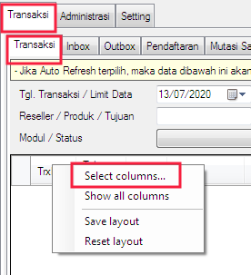
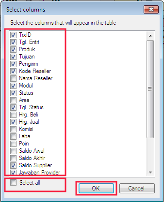
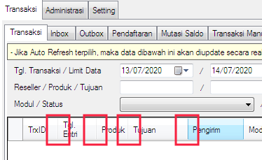

Auto Save Layout
Di versi terdahulu, layout (tata letak) kolom tabel - tabel OtomaX seperti kolom apa yang ditampilkan, kolom apa yang disembunyikan, lebar kolom, urutan kolom akan kembali ke layout default manakala OtomaX ditutup dan dibuka kembali, meskipun sebelumnya sudah diatur.
Di versi 4.0.0, Anda dapat mengatur kolom apa yang ingin ditampilkan, kolom apa yang ingin disembunyikan, posisi kolom di urutan mana, lebar kolom berapa, serta saat Anda tutup buka OtomaX, layout yang telah Anda tentukan tersebut akan tersimpan secara otomatis, tidak kembali ke layout default. Hal ini pengaruh dari adanya fitur Auto Save Layout di versi ini. Tertarik dengan fitur ini, bisa membeli OtomaX dengan klik disini sekarang.
Misalnya Anda ingin mengatur layout tabel menu Transaksi -> Transaksi, maka:
-
Arahkan kursor mouse ke judul tabel -> klik kanan -> klik Select columns...

-
Centang kolom yang ingin ditampilkan atau centang checkbox: Select all jika ingin menampilkan semua kolom, kemudian klik OK. Layout akan tersimpan otomatis.

-
Untuk mengatur lebar kolom, arahkan kursor mouse ke garis vertikal diantara 2 kolom, seret ke kanan atau ke kiri, lalu klik kanan di atas judul tabel, dan kemudian klik Save layout.

- Selesai.
Sebagai tambahan, perlu diketahui apabila Anda ingin menampilkan semua kolom untuk sementara waktu, arahkan kursor mouse ke judul tabel klik kanan -> klik Show all columns. Bilamana tidak ingin layout kembali ke layout awal saat tutup buka OtomaX klik Show all colums -> klik Save layout. Dan bilamana ingin kembali ke layout default klik Reset layout -> klik OK -> tutup buka OtomaX.